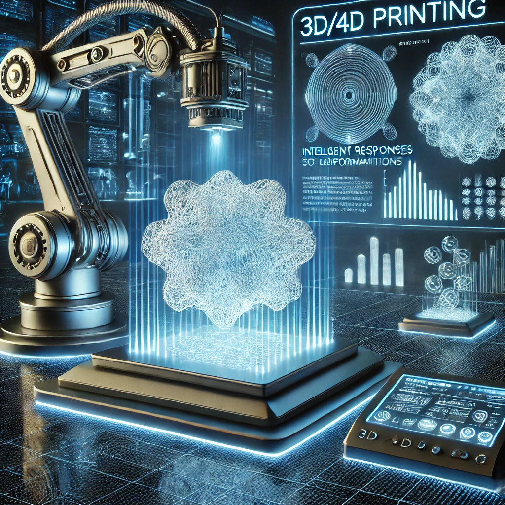

About Me
I am a Ph.D. candidate in the Department of Mechanical and Automation Engineering at The Chinese University of Hong Kong (CUHK), under the supervision of Prof. Wei-Hsin Liao. I am a recipient of the Hong Kong PhD Fellowship Scheme (HKPFS). My research focuses on 3D/4D printing, smart materials and structures, and soft robotics. It integrates machine learning-driven design methodologies with additive manufacturing techniques to develop materials with enhanced mechanical performance and adaptability. I am also a visiting scholar at the Southern University of Science and Technology (SUSTech) and Shenzhen University (SZU). Before pursuing my Ph.D., I obtained a bachelor's degree from the Sichuan University - Pittsburgh Institute (SCUPI). I have research experience as a Mitacs Globalink Research Intern at McGill University and as a Research Assistant at Westlake University. In addition to research activities, I am a member of ASME, SPIE, and the 4D Printing Society.

3D/4D Printing
To develop advanced 3D/4D printing techniques for creating adaptive, high-performance materials and structures with multifunctional properties for applications in robotics, aerospace, and sustainable manufacturing.
Soft Robotics
To design and fabricate soft robots with enhanced flexibility, resilience, and intelligence, powered by multimaterial 3D printing and machine learning, for applications in healthcare, automation, and environmental monitoring.

AI for Science
To integrate AI-driven optimization and predictive frameworks into the design and fabrication of soft robots and advanced materials, enabling the creation of smart systems that adapt and respond to their environment in real time.
Metamaterials & Metastructures
To design and engineer metamaterials and metastructures with tunable mechanical, thermal, and acoustic properties, leveraging computational modeling and additive manufacturing for applications in energy absorption, vibration control, and next-generation smart materials.